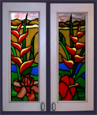
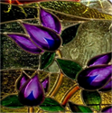

Création · Restauration · Transmission
La lumière
prend forme.
Des vitraux singuliers, façonnés à la main pour faire entrer la couleur, l’histoire et la lumière dans votre quotidien.
et des créations faites pour durer.


Le verre raconte
une histoire.
À l’Atelier du Renart Vert, chaque pièce naît d’une rencontre : un lieu, une envie, une lumière. L’atelier imagine et réalise des vitraux sur mesure, dans le respect des gestes traditionnels et avec une curiosité toujours en mouvement.
Voir les possibilités ↗La beauté du verre,
en lumière.
Fleurs, formes, scènes et couleurs :
chaque création trouve sa propre voix.
Les photos de cette collection ne font pas partie des images reçues.
Une sélection des réalisations de l’atelier. Chaque pièce est unique.
Des idées au
verre vivant.
De la première esquisse au dernier morceau de verre, l’atelier vous accompagne à chaque étape.
Création sur mesure
Portes, fenêtres, cloisons ou objets décoratifs, imaginés autour de votre espace.
Restauration
Une attention particulière aux verres, aux lignes et à l’histoire du vitrail.
Démonstrations médiévales
Les gestes du vitrailliste expliqués et partagés avec le public.
Stages & formation
Découvrir les matériaux et s’initier aux techniques du vitrail.
Un projet
à votre image.
Une envie, une question ?
Parlons de
votre projet.
Décrivez-moi votre idée, même si elle n’est encore qu’une intuition. Nous verrons ensemble comment lui donner forme.
Atelier du Renart Vert · Aveyron